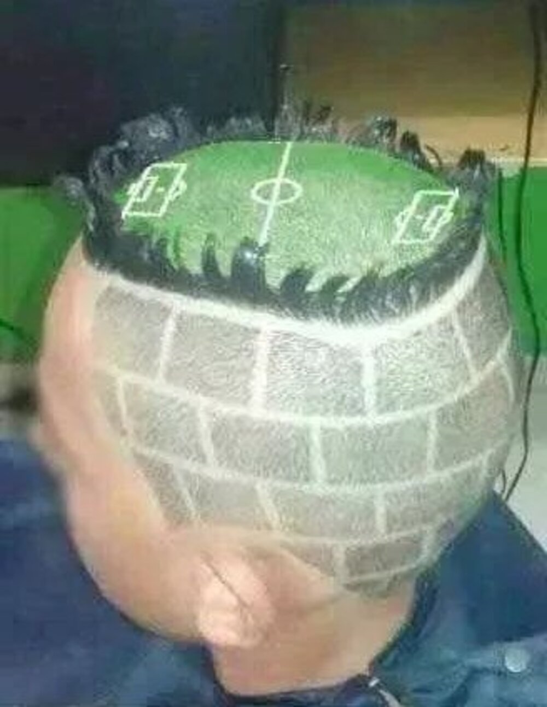
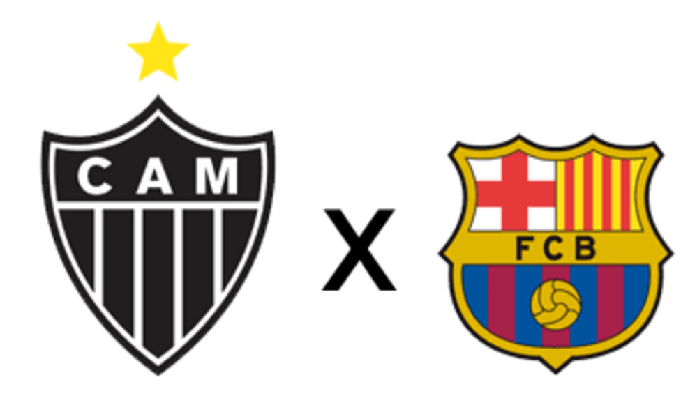
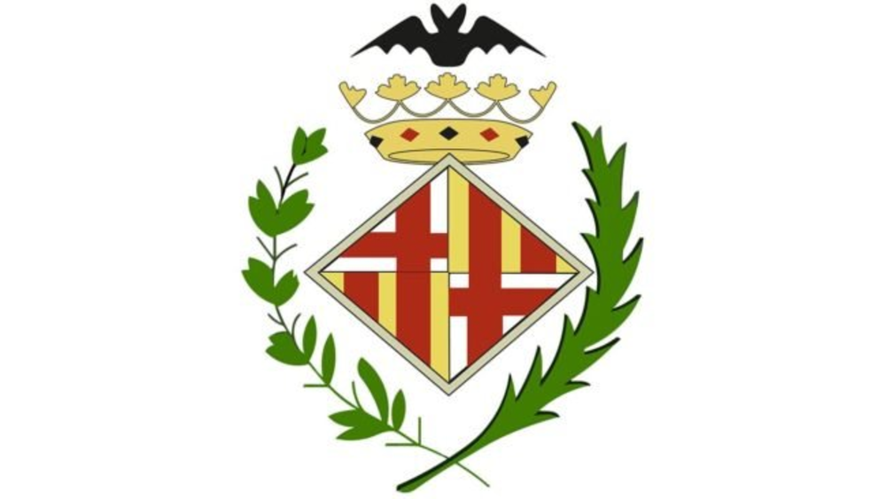
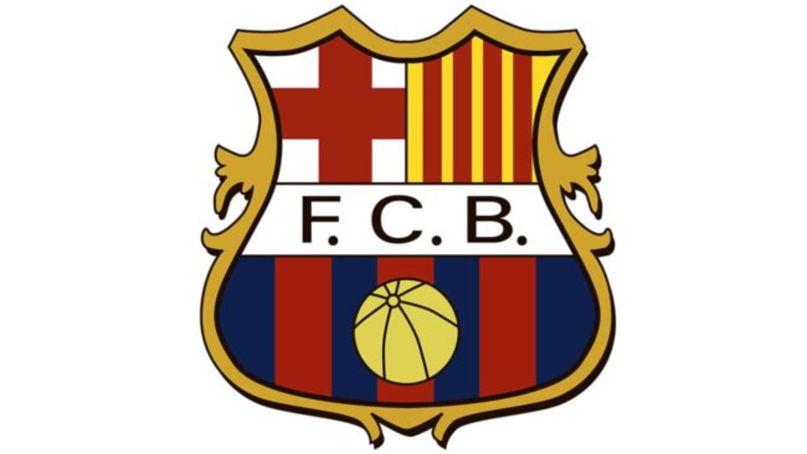
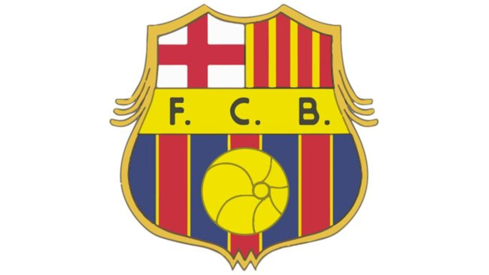
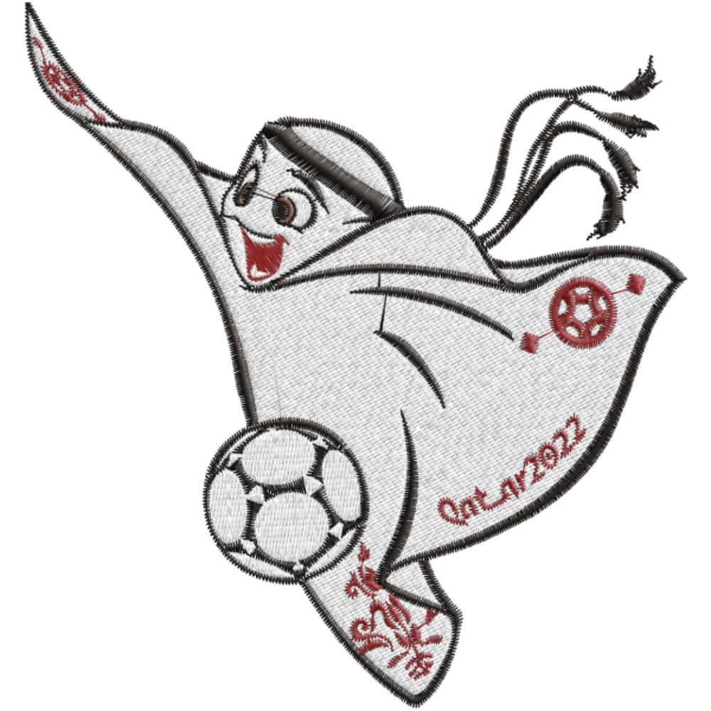
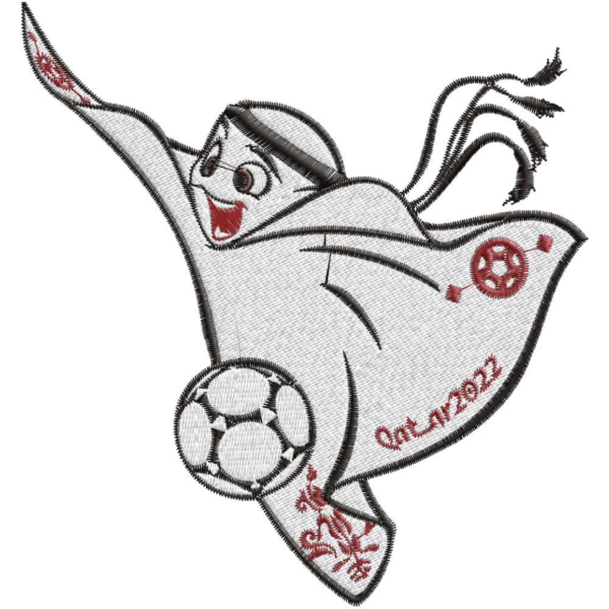
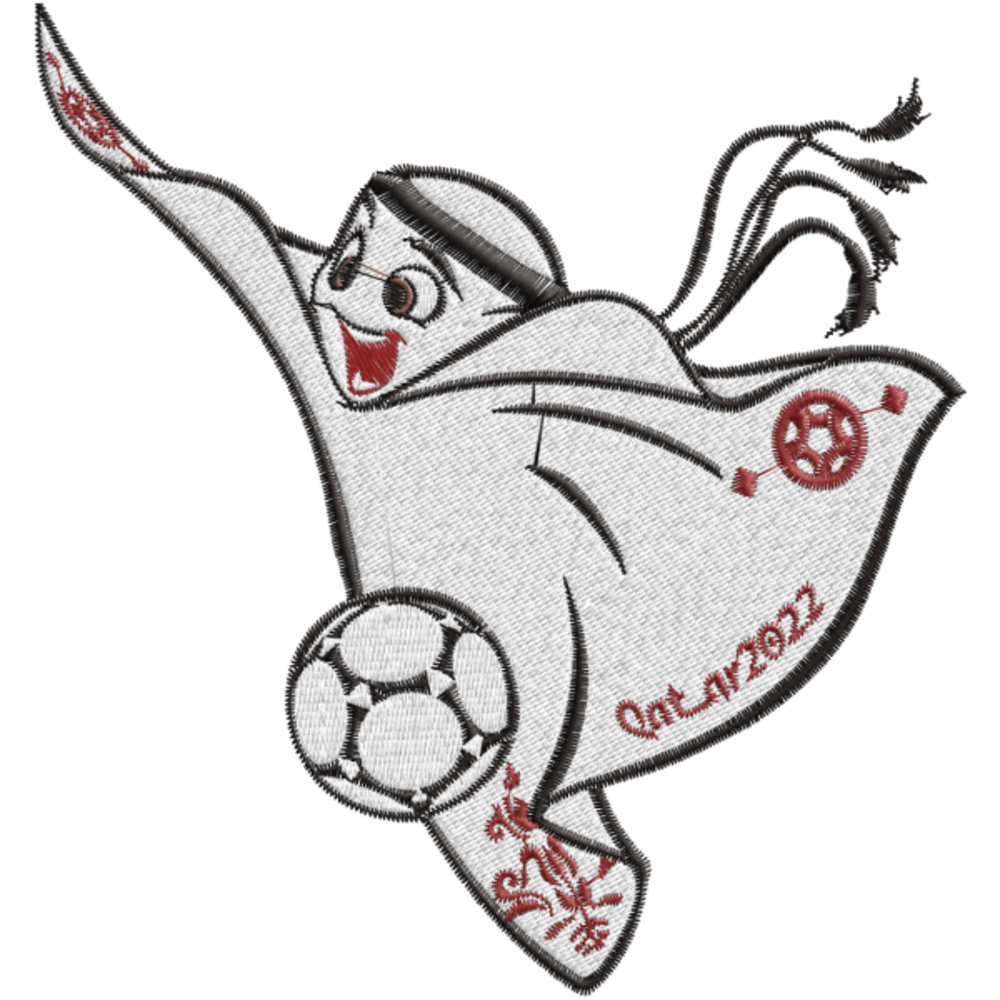

MENU
Página inicial
Sobre mim e meus times
Galeria de fotos usadas
Pagina para contato
Curiosidades do futebol
Escudos do Barcelona
Escudos do Ajax
Copa do Mundo de 2022
Galeria
Todas as imagens do site








 
